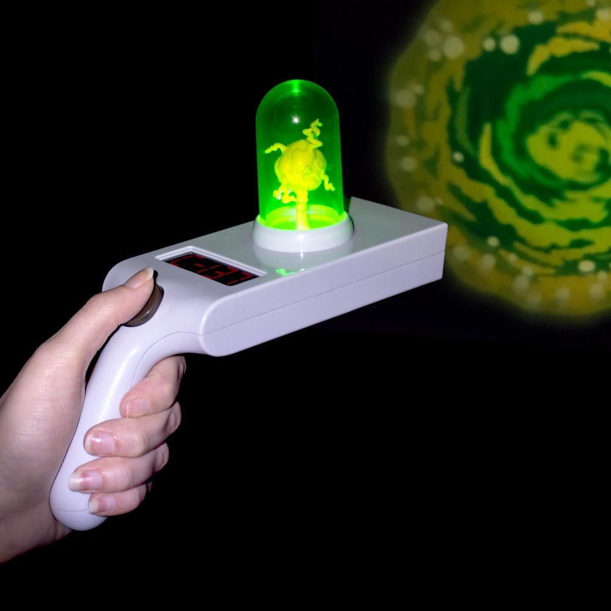
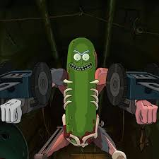
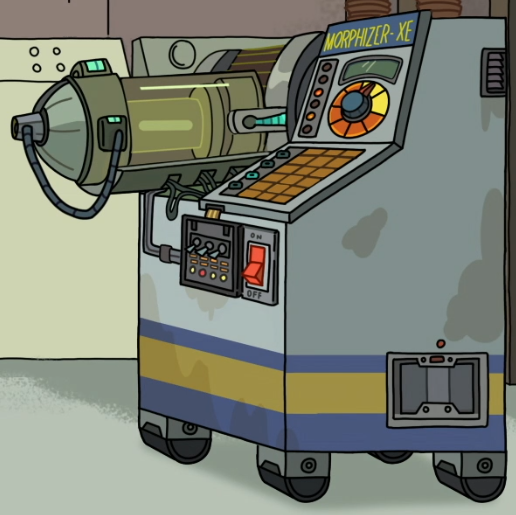
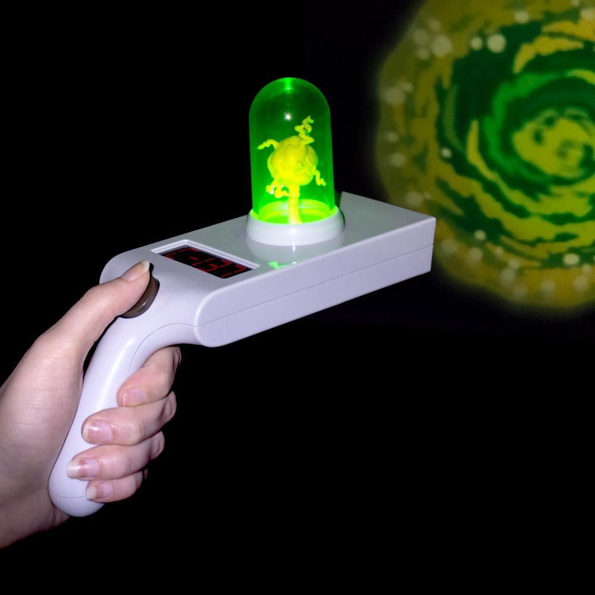
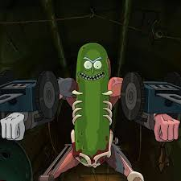
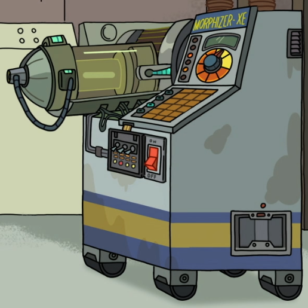

About me

Hi i'm Rick Sanchez
Rick is a tall, lanky old man. He has long legs and arms, and is very skinny. He has a dimly tanned ashy complexion and grey-blue hair with a bald spot on the back of his head. He has spiky blue hair on his head and a unibrow. His face is wrinkly as he has bags under his eyelids and a pressure fold above his unibrow that follows its position and laugh lines on both sides of his mouth. He wears a white lab coat with a light blue undershirt underneath it. He also wears brown pants, a dark brown belt with a yellow buckle, and black shoes. He is occasionally seen with some green spill on his mouth, showing up mainly when he is drunk, or during a rare chance where he throws up. Rick speaks in a rambling, stammering manner that is often interrupted by belching and gagging, usually from being drunk.
 




